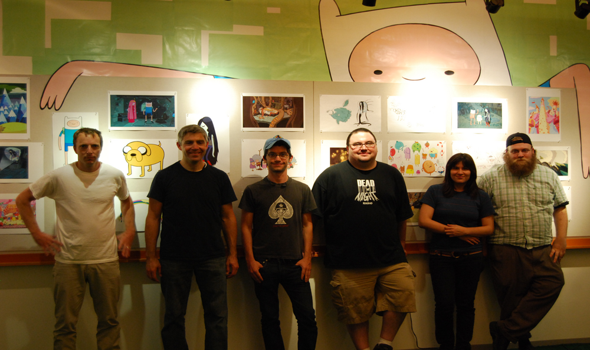

| Name | Pendleton Ward |
|---|---|
| Birthday | September 23, 1982 (age 39) |
| voices |
|
Staff
Creator - Pendleton Ward
Executive Producers - Fred Seibert, Rob Swartz (Season 1), Derek Drymon (Season 1), Rob Sorcher, Curtis Lelash
Producer - Kelly Crews
Story Editor - Mark Banker, Craig Lewis, Merriwether Williams
Creative Directors - Adam Muto, Nate Cash, Nick Jennings
Staff Writers - Kent Osborne, Patrick McHale
Storyboard Supervisor - Nate Cash
Supervising Director - Larry Leichliter
Sheet Timers - Don Judge, Michel Lyman, Richard Collado, Christine Kolosov, Russell Calabrese, Bob Nesler, Jamie Mitchell, Rob Renzetti
Production Manager - Keith Mack
Production Coordinator - Dick Grunert
Production Assistants - Patrick Seery, David C. Smith, Joseph Game
Lead Character and Prop Designer - Phil Rynda (Seasons 1 - 3), Andy Ristaino (Season 3 - Current)
Character and Prop Designers - Michelle Xin, Michael DeForge
Character and Prop Design Clean Up - Alex Campos, Mike Collins
Background Designers - Ghostshrimp, Santino Lascano, Derek Hunter
Background Painters - Martin Ansolabehere, Ron Russell, Sue Mondt
Color Stylists - Catherine E. Simmonds, Ron Russell, Simon Simmonds, Sandra Calleros
Animatic Editors - Oliver Akuin, Greg Levitan, Andy Tauke
Animatic Scanner - Tammy List
Storyboard Revisions - Natasha Allegri, Skyler Page, Robert Ryan Cory, Steve Wolfhard
Storyboard Artists- Benton Connor, Armen Mirzaian, Elizabeth Ito, Skyler Page, Luther McLaurin, Jesse Moynihan, Sean Jimenez
Voice Actors
Finn - Jeremy Shada
Jake - John DiMaggio
Ice King - Tom Kenny
Princess Bubblegum - Hynden Walch
Marceline - Olivia Olson
Lumpy Space Princess - Pendleton Ward
Lady Rainicorn, BMO - Niki Yang
Flame Princess - Jessica DiCicco
Additional Voices
Brad Abrell
Matt Adler
Steve Alterman
Tom Amundsen
Stephen Apostolina
Kirk Baily
Greg Berg
Julianne Buescher
Robert Clotworhty
Wendy Cutler
Terri Douglas
Robin Atkin Downes
Chris Edgerly
Patrick Fraley
Eddie Frierson
Jessica George
Jackie Gonneau
Archie Hahn
Jason Harris
Bridget Hoffman
Wendy Hoffmann
Various characters
Maria Bamford
Dee Bradley Baker
Voice Director - Collette Sunderman, Keythe Farley (Season 1)
Recording Studio Managing - Karie Gima Pham
Sound Recording Engineer - Robert Serda
Supervising Editor - Paul Douglas
Dialogue Editor - Krandal Crews
Director Production Technology - Antonio Gonella
Composers - Casey James Basichis, Timothy Keiffer
Music Editor - Nick Carr
Main Title Song - Pendleton Ward, Casey James Basichis
End Credit Song - Ashley Eriksson
Re-Recording Mixers - Gary A. Rizzo, David Acord, Gary Summers
Supervising Sound Editors - Matthew Wood, Gary Rydstorm, Dennis Leonard
Supervising Dialogue Editor - Cheryl Nardi
Sound Effects Editors - Teresa Eckton, Shannon Millis
ADR Supervisor - Jonathan Null
ADR Editor - Steve Slanec
Foley Editors - Christopher Barrick, Richard Quinn
Assistant Sound Editor - Cindy Jo Hinkleman
Assistant Supervising Sound Editor - Coya Elliot
Foley Artists - Jana Vance, Dennie Thorpe, Ellen Heuer
Foley Mixer - Frank Rinella
Foley Recordist - Sean England
Mix Technclain - Jurgan Scharf
Post-production Supervisor - Tony Tedford
Post-production Coordinator - Alicia Parkinson
Machine Room Operator - Chris Hoetger
Animation Checking - Sandy Benenati, Vicki Casper
Track Reading - Slightly Off Track
Production Estimator - Cecilia Rheins
Series Executive - Conrad Montgomery
Overseas Production Facilities - Rough Draft Korea Co. Ltd., Saerom Animation Inc.
Overseas Directors - Dong-kun Won, Bonghui Han
Frederator Studios
Associate Producer - Eric Homan
Supervising Producer - Kevin Kolde
Executive Producer - Fred Seibert
Nelvana
Executive Producer - Clive A. Smith
Cartoon Network Studios
Executive Producers - Brian A. Miller, Jennifer Pelphrey
Storyboarders
Pendleton Ward
Adam Muto
Rebecca Sugar
Ako Castuera
Tom Herpich
Kent Osborne
Somvilay Xayaphone
Cole Sanchez
Jesse Moynihan
Bert Youn
Skyler Page
Thurop Van Orman
JG Quintel
David C. Smith
Ian Jones-Quartey
Phil Rynda
Gallery
